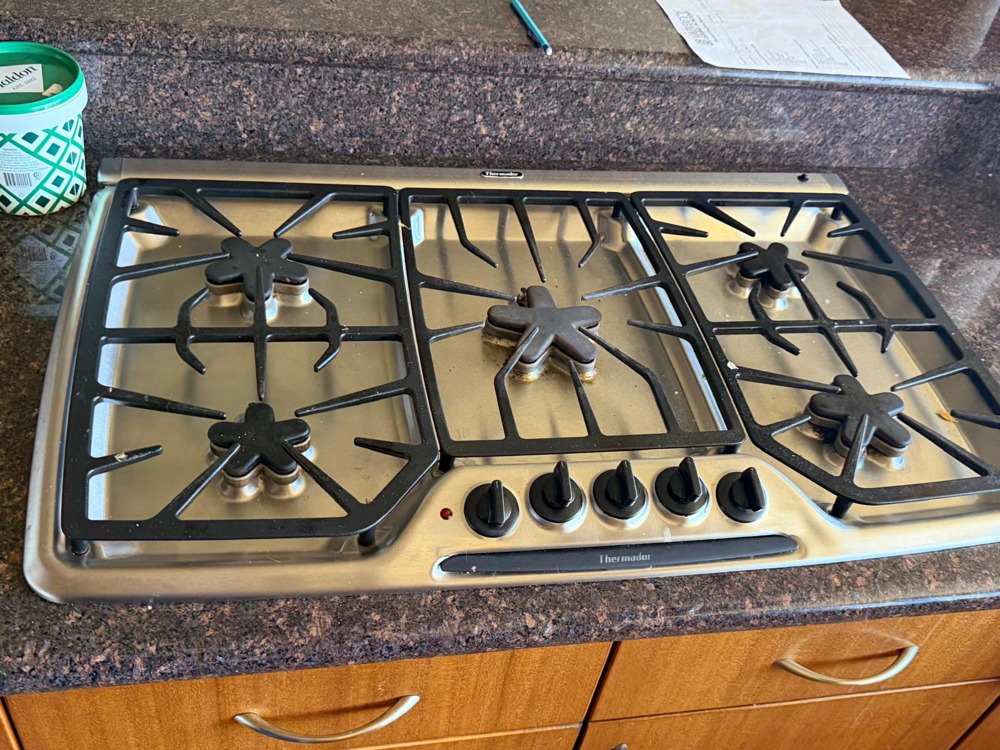
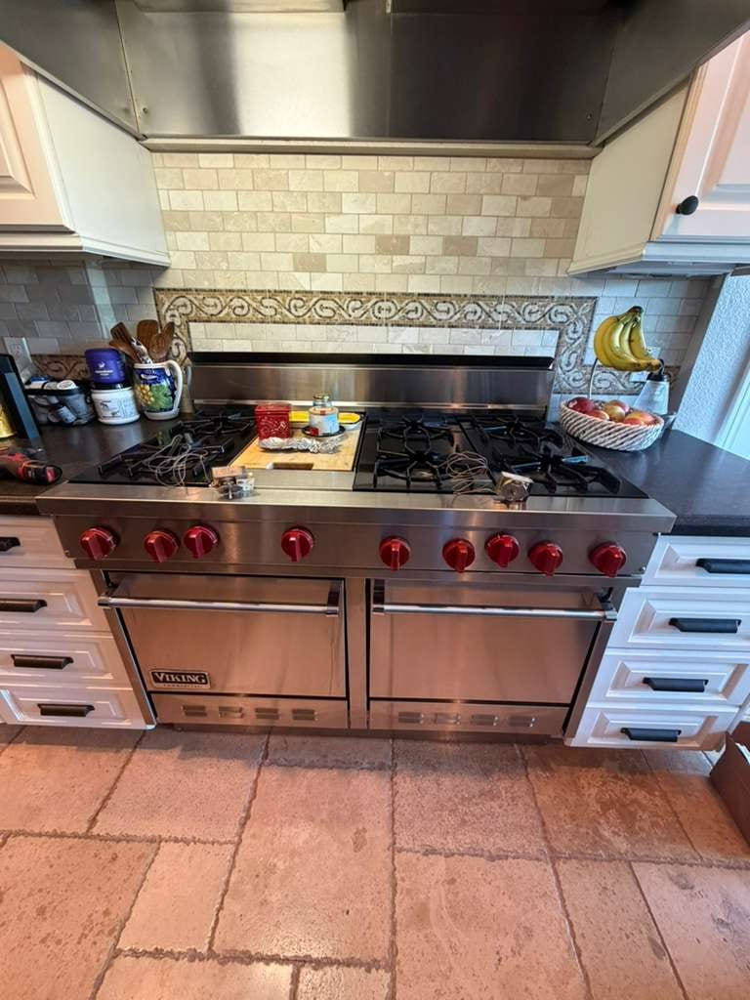
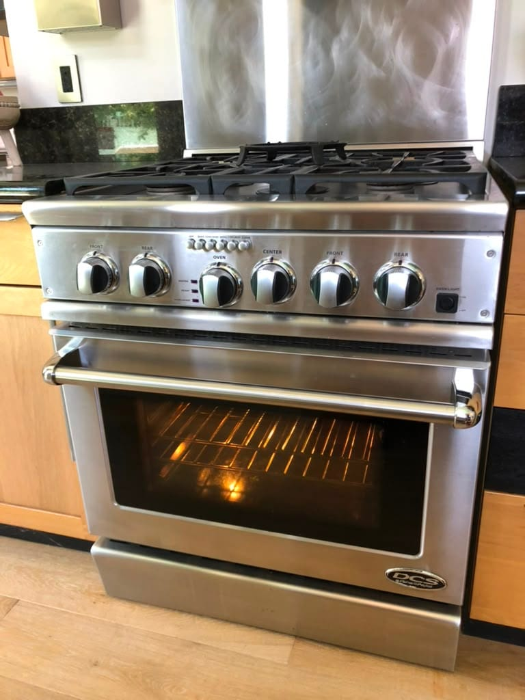

Thermador · Double Wall Oven · Tustin, CA
Viking, Wolf, Thermador, Sub-Zero, Miele, Dacor, DCS, and Bosch premium lines, in Craftsman kitchens and estate remodels across the city. We take premium brands only here. Our Los Angeles technician can often be out the same day.
5.0 · 162 Google reviewsMon–Sat, 8am–7pm. Two-hour arrival window. The technician calls before arriving.
See neighborhoods and ZIP codes
Family-owned since 2017 · Licensed, bonded & insured
Thermador, Viking, and DCS jobs, three of them where the appliance had to come out of a cabinet opening before anything could be diagnosed, which is the situation most Pasadena kitchens present. Every photo is our own work, labeled with the city it was actually taken in. Pasadena is a newer market for us, and local jobs will appear here as we complete them.
Thermador · Double Wall Oven · Tustin, CA


Thermador · Cooktop · Santa Ana, CA
These are the eight brands we take in Pasadena: Viking, Wolf, Thermador, Sub-Zero, Miele, Dacor, DCS, and Bosch premium built-in lines. Choose a brand below to see the failures we see most often on that brand, the parts involved, and how the repair usually goes.
Pasadena is premium-brand only. If your appliance is one of these eight, the diagnostic is a flat $99 credited toward the repair, and same-day is often open. With Bosch we take the premium built-in lines, Benchmark included, so if you're not sure which Bosch you have, read us the model number and we'll check it with you. If it's a Whirlpool, LG, or Samsung, we'll tell you on the phone rather than after a visit.
Independent repair service. Not affiliated with or endorsed by these manufacturers; brand names and logos are trademarks of their owners.
We service these brands and make no claim of factory authorization. If your appliance is still under manufacturer warranty, call the brand first, because authorized warranty work should cost you nothing.
What we work on in Pasadena kitchens. Open any one for the brands covered, the faults we see most often, and what the repair typically costs.
The diagnostic fee in Pasadena is a flat $99, the same rate we charge across Orange County and the rest of Los Angeles County, credited toward your repair if you proceed. It does not change with the brand or the age of the house. Most premium-brand repairs land between $250 and $900. Viking igniter and burner work usually runs $200 to $600, while sealed-system refrigeration work on a Sub-Zero built-in runs $1,200 to $2,500. Seniors 60+ and repeat customers get 20% off labor.
Estimates vary by brand, part availability, and diagnosis. Final quote is provided before repair. Full pricing guide
We cover the residential Pasadena ZIP codes: 91101, 91103, 91104, 91105, 91106, and 91107. One thing worth clearing up before you book: address lookups often file 91108 under Pasadena, but that is San Marino, a separate city. What actually varies across Pasadena is the age of the kitchen and how much of the house was built around the appliance.
Pasadena's first designated landmark district. A landmark district of hundreds of Craftsman houses, with 522 buildings counted as contributing to its National Register listing. Kitchens here have almost always been remodeled at least once, which means a modern professional range or a built-in refrigerator sitting inside an envelope that was never designed for it. Clearance is the first thing we check, not the last.
California Blvd to Allendale, Marengo to El Molino. The blocks running south from California Boulevard toward the South Pasadena line, between Marengo Avenue and the Lake and El Molino side. Larger period homes with deep kitchen remodels, and a high share of full built-in refrigeration and pro ranges among the calls we get from this part of town.
Pasadena's southernmost neighborhood, San Marino border. The southernmost stretch of the city, running down to Old Mill Road and the San Marino boundary, with some of the most substantial historic houses and hotel properties in Pasadena. Estate kitchens here often run a full matched suite, and secondary kitchens or butler pantries with their own refrigeration are common.
West of Brookside Park. The hillside area west of Brookside Park and along Linda Vista Avenue, across the Arroyo Seco from the rest of the city. Winding approach roads and long driveways, so we build a little more travel time into these appointments than for a flat street downtown.
Central Pasadena. The original commercial core and the residential blocks around it, including lofts and condominium conversions in older buildings. Compact kitchens where an integrated dishwasher or an undercounter wine unit is the usual call, and where building access and a service elevator need arranging before the visit.
East of Allen Avenue. Postwar and later housing running east toward the Sierra Madre boundary, with more standard cabinet dimensions and newer kitchens than the west of the city. This is also the hottest part of town in late summer, which shows up in the refrigeration calls we take from here.
A professional appliance retrofitted into a house built decades before it was designed brings its own set of faults, on top of everything that can go wrong with the appliance itself.
Most of what makes a Pasadena service call different happens before anyone touches the appliance. A professional range in Bungalow Heaven is very often sitting in an opening that was a plaster alcove for something much smaller, with a quarter inch of clearance on either side and an original hardwood or tile floor that will show every scrape. A built-in refrigerator in a Madison Heights remodel may be flush against a cabinet run that has settled a fraction of an inch out of square since it was installed. None of that is a fault, but all of it decides how the visit goes, and it is why we ask about the opening when you book rather than discovering it on arrival.
The second thing is the house behind the appliance. Older Pasadena homes sometimes deliver gas at a pressure that a modern high-output burner was not designed around, so a range that will not hold a low simmer can be perfectly healthy while the supply is the problem. Circuits laid out for a 1940s kitchen occasionally have a built-in refrigerator and a wall oven sharing a run that trips when both call for power. We diagnose the appliance properly, and when the cause is upstream we say so, because replacing a good spark module will not fix a supply issue and you should not pay for the part twice.
The third is simply the weather. Pasadena sits inland in the San Gabriel Valley and gets genuinely hot from July into October, and built-in refrigeration rejects heat into the room it stands in. A condenser that is half-blocked will hold temperature comfortably in spring and lose the fight in September, which is why refrigeration calls here cluster at the end of summer rather than the beginning. Our county-level page covers the premium service across all four cities: luxury appliance repair in Los Angeles.
Universal Appliances Repair Group Inc. provides luxury appliance repair in Pasadena, California, for premium brands only, covering built-in and professional appliances: gas and dual-fuel ranges, rangetops and cooktops, wall ovens, built-in refrigeration, panel-ready dishwashers, wine storage, and freezers. We cover ZIP codes 91101, 91103, 91104, 91105, 91106, and 91107, including Bungalow Heaven, Madison Heights, Oak Knoll, Linda Vista, and the streets around Old Pasadena.
Our Los Angeles technician offers same-day service when that schedule is open. We also serve nearby Los Angeles, Santa Monica, and Beverly Hills. Call (949) 629-5365 or book online.
Still have a question? Call (949) 629-5365.
Viking, Wolf, Thermador, Sub-Zero, Miele, Dacor, DCS, and Bosch premium lines from Bungalow Heaven to Oak Knoll. Same-day when our Los Angeles technician has an opening. 90-day parts / 30-day labor warranty on every job.